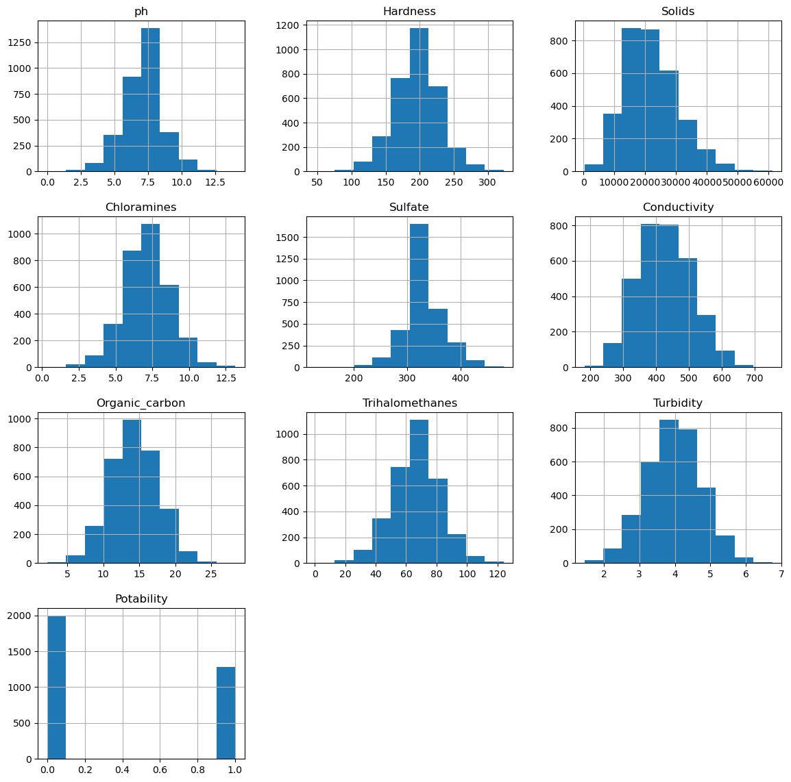
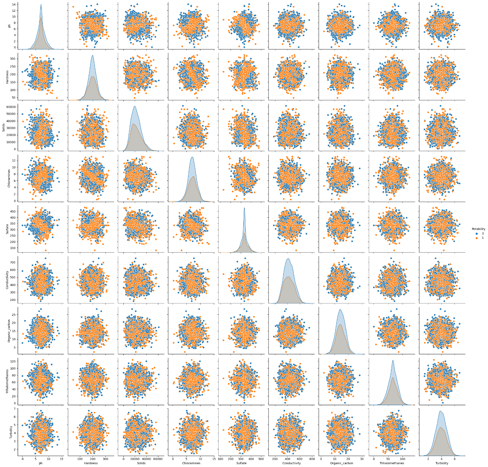
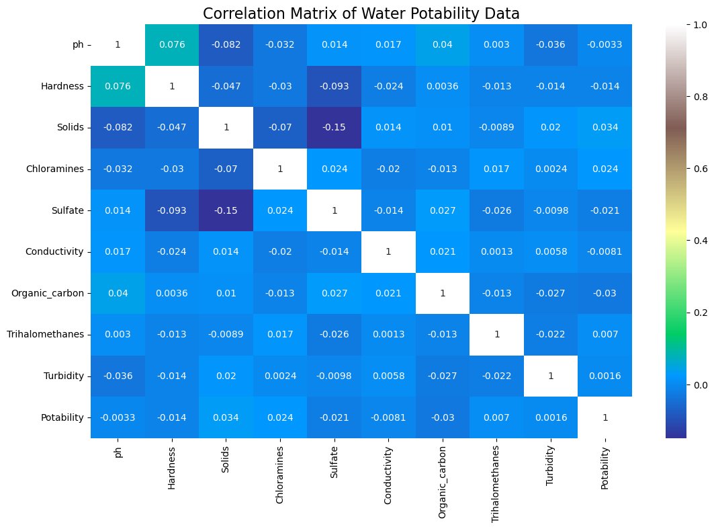
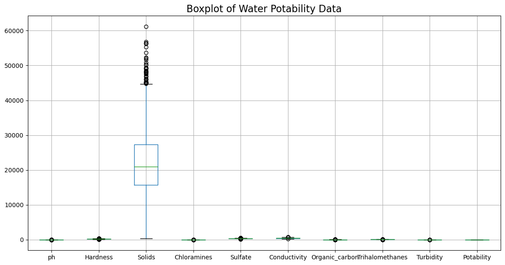

Introduction
Water quality prediction is a process of using models and data analysis techniques to forecast changes in the quality of water in rivers, lakes, and other bodies of water. The prediction of water quality can be important for environmental management, public health, and industrial applications.
To predict water quality, researchers and analysts typically use a combination of physical, chemical, and biological measurements, as well as data on weather, water flow, and land use. These data are used to build models that can forecast how water quality will change over time, given different scenarios and conditions.
Water quality prediction models can be used to identify potential sources of pollution, assess the effectiveness of pollution control measures, and help guide decisions about water management and use. For example, water quality predictions may be used to determine the optimal time and location for fishing or swimming, or to guide the allocation of water resources for different uses such as irrigation, industrial processes, or drinking water.
Overall, water quality prediction is an important tool for understanding and managing water resources, and can play a critical role in protecting public health and environmental sustainability.
Testing for Water Potability
A histogram is used to display the distribution of a variable, such as pH, hardness, solids, chloramines, sulphates, conductivity, organic carbon, trihalomethanes, turbidity, and potability, by dividing it into intervals and showing the frequency or count of data points within each interval.
In the case of a histogram showing water quality parameters, each variable would be shown on a separate histogram with the x-axis representing the range of values and the y-axis showing the frequency or count of measurements falling within each range.
The histograms for pH, hardness, solids, chloramines, sulphates, conductivity, organic carbon, trihalomethanes, and turbidity might show different distributions that provide insights into the quality of the water. The histogram for potability, if included, would show the number of samples that meet or exceed the relevant standards for drinking water.
Overall, a histogram of water quality parameters can be a useful tool for identifying patterns and trends in water quality data, and for guiding decisions about water treatment and management.

The pairplot shows the pairwise relationships between the different variables in the dataset while also differentiating between the two values of the 'Potability' column. This would allow us to visualize any differences or patterns in the relationships between the variables for the potable and non-potable water samples
For example, we might see that the scatter plot for pH and hardness shows a different relationship for potable and non-potable water, with the two groups clustering in different areas of the plot. Similarly, we might see that the histograms for chloramines and turbidity have different distributions for the two groups.
By using the 'Potability' column as the hue, the pairplot can provide a quick and easy way to compare the relationships between variables for potable and non-potable water samples. This can help us to identify any patterns or trends that might be relevant for water quality assessment and management.

In a water quality dataset, the correlation matrix might show the correlation coefficients between variables such as pH, hardness, turbidity, and chloramines. If the correlation coefficient between pH and hardness is close to 1, this indicates that pH and hardness are strongly positively correlated, while a correlation coefficient close to -1 indicates a strong negative correlation. A correlation coefficient close to 0 indicates little to no correlation between the two variables.
The correlation matrix can provide useful information on the strength and direction of relationships between variables in the dataset. It can be used to identify which variables are most strongly related to each other and which variables have little or no relationship. Additionally, it can be used to identify potential multicollinearity issues, where two or more variables are highly correlated with each other and may not add much additional information to a statistical model.
Overall, the correlation matrix is a useful tool for understanding the relationships between variables in a dataset and for guiding further analysis and modelling

A boxplot of all columns in a water quality dataframe that includes pH, hardness, solids, chloramines, sulphates, conductivity, organic carbon, trihalomethanes, turbidity, and potability would show the distribution of each of these variables. Each column would have its own boxplot, and the 'Potability' column would show two boxes representing the distribution of the potable and non-potable water samples.
The boxplot would allow us to compare the distribution of each variable and to identify any outliers or skewness in the distribution
By comparing the boxplots of each variable, we can gain insights into the variability and distribution of the data, and identify any potential issues that may need to be addressed in further analysis. For example, if we see a large number of outliers in the boxplot for a particular variable, we may need to investigate the cause of these outliers and whether they are due to measurement error or some other factor.
Overall, the boxplot of all columns in the dataframe provides a useful tool for visualizing the distribution of the data and identifying any potential issues that may need to be addressed in further analysis.

Common Water Contaminants
Bacteria, viruses, and other microorganisms
Chemical pollutants such as pesticides, heavy metals, and solvents
Natural substances such as arsenic and radon
Water Treatment Methods
To ensure water potability, it is important to treat water sources to remove contaminants and regularly test water quality. Drinking water treatment methods include filtration, disinfection, and distillation.